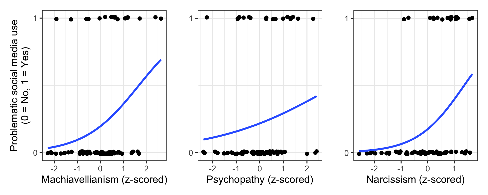
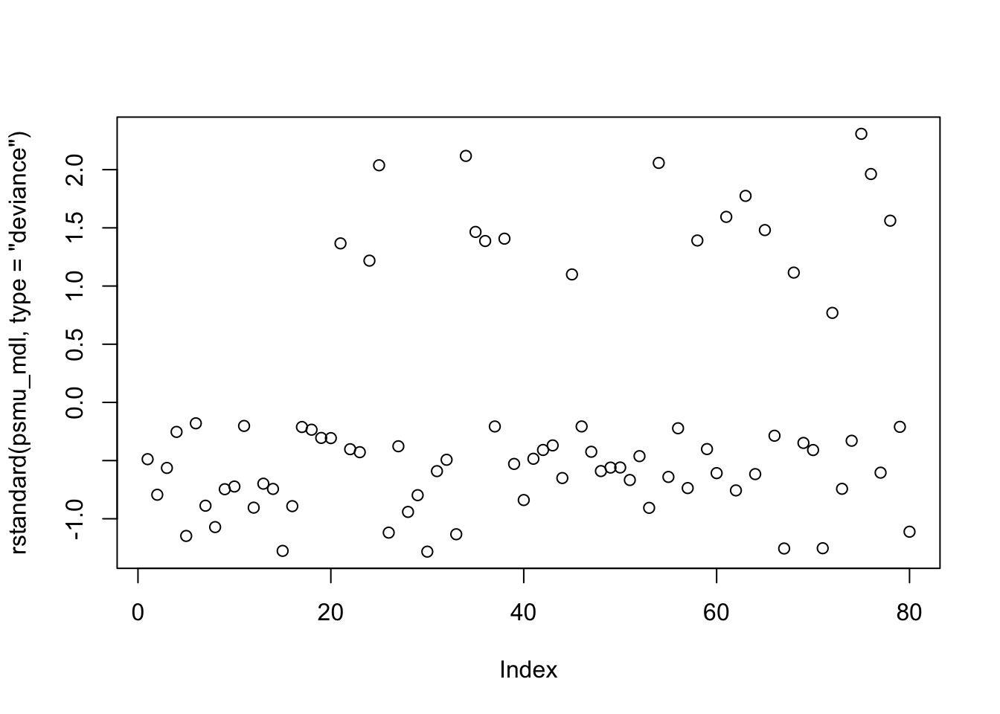
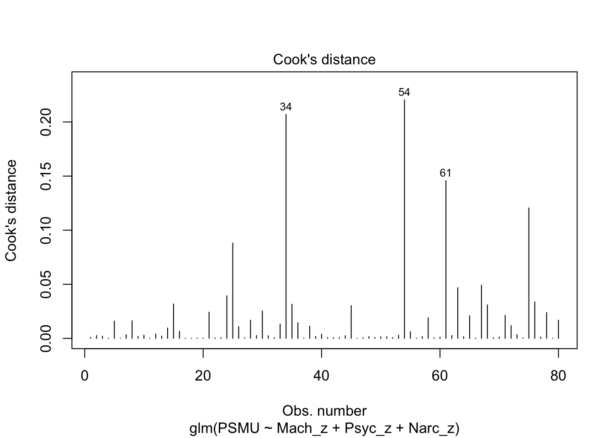
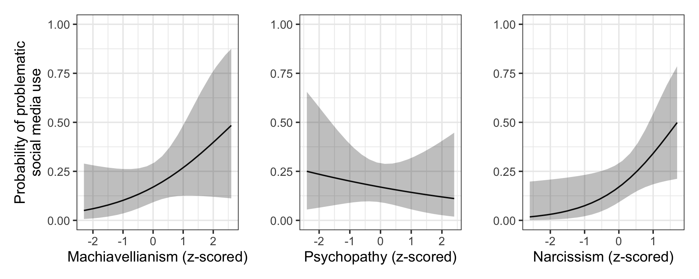

| variable | description |
|---|---|
| subjID | Subject ID |
| Mach_z | subject's Machiavellianism, z-scored (reflecting manipulativeness and deceptiveness) |
| Psyc_z | subject's Psychopathy, z-scored (reflecting antisociality, impulsivity, lack of empathy) |
| Narc_z | subject's Narcisissm, z-scored (reflecting arrogance and grandiosity) |
| PSMU | Whether the subject displays "problematic social media use" (PSMU): 0 if no, 1 if yes |
18: Logistic regression with multiple predictors
In this lab, you’ll practice fitting and interpreting a logistic regression model with three continuous predictors based on the Dark Triad. You’ll also check the model’s assumptions and diagnostics.
NoteGet set up
- Create a new .Rmd file for this week’s exercises.
- Save it somewhere you can find it again.
- Give it a clear name (for example,
dapr2_lab18.Rmd). - In the first code chunk, load the packages you’ll need this week:
tidyverseeffectspatchworkcar
RQ: How are the three Dark Triad traits (Machiavellianism, Psychopathy, Narcissism) associated with so-called “problematic social media use”?
Data dictionary:
NoteMore detail about this dataset
“Problematic social media use” (PSMU) has been defined as people being uncontrollably motivated to use social media, to the detriment of other areas of their life.
The data in psmu_darktriad.csv data contains simulated personality measures and PSMU behaviour for \(n = 80\) individuals, based on findings from this paper by Kircaburun et al (2019).
Read in and visualise data
q1
Question 1
Read in the data from https://uoepsy.github.io/data/psmu_darktriad.csv and store it in a variable named psmu_data.
psmu_data <- read_csv('https://uoepsy.github.io/data/psmu_darktriad.csv')
q2
Question 2
Use patchwork to recreate the following plot of psmu_data (or get as close as you can—do your best!).

🗂️ See TODO flash card.
The strategy: create each plot separately and then combine them using patchwork.
The machiavellianism plot:
p_mach <- psmu_data |>
ggplot(aes(x = Mach_z, y = PSMU)) +
# wiggle the points around a little bit
# so they don't all overlap
geom_jitter(height = 0.01) +
# label only 0 and 1 on the y axis
scale_y_continuous(breaks = c(0, 1)) +
# add curve of best fit
geom_smooth(
# glm = "generalised linear model"
method = "glm",
# binomial = outcomes are 0s and 1s
method.args = list(family = binomial),
# remove standard error ribbon
se = FALSE
) +
# add axis labels for reader-friendliness
labs(
y = 'Problematic social media use\n(0 = No, 1 = Yes)',
x = 'Machiavellianism (z-scored)'
)The psychopathy plot:
p_psyc <- psmu_data |>
ggplot(aes(x = Psyc_z, y = PSMU)) +
geom_jitter(height = 0.01) +
scale_y_continuous(breaks = c(0, 1)) +
geom_smooth(
method = "glm",
method.args = list(family = binomial),
se = FALSE
) +
labs(
y = '',
x = 'Psychopathy (z-scored)'
)The narcissism plot:
p_narc <- psmu_data |>
ggplot(aes(x = Narc_z, y = PSMU)) +
geom_jitter(height = 0.01) +
scale_y_continuous(breaks = c(0, 1)) +
geom_smooth(
method = "glm",
method.args = list(family = binomial),
se = FALSE
) +
labs(
y = '',
x = 'Narcissism (z-scored)'
)Put them together using patchwork:
p_mach + p_psyc + p_narc
Fit and interpret the model
q3
Question 3
Our model will predict the log-odds of an individual displaying PSMU as a function of their Machiavellianism, their psychopathy, and their narcissism (all z-scored).
Write the mathematical expression for this model.
🗂️ See TODO flash card.
\[ \text{logodds(PSMU)} = \beta_0 + (\beta_1 \cdot \text{Mach\_z}) + (\beta_2 \cdot \text{Psyc\_z}) + (\beta_3 \cdot \text{Narc\_z}) \]
Write:
$$
\text{logodds(PSMU)} = \beta_0 +
(\beta_1 \cdot \text{Mach\_z}) +
(\beta_2 \cdot \text{Psyc\_z}) +
(\beta_2 \cdot \text{Narc\_z})
$$
q4
Question 4
Use glm() to fit the model defined above. Name the outcome psmu_mdl and display the model summary.
🗂️ See TODO flash card.
psmu_mdl <- glm(
PSMU ~ Mach_z + Psyc_z + Narc_z,
data = psmu_data,
family = binomial
)
summary(psmu_mdl)
Call:
glm(formula = PSMU ~ Mach_z + Psyc_z + Narc_z, family = binomial,
data = psmu_data)
Coefficients:
Estimate Std. Error z value Pr(>|z|)
(Intercept) -1.5883 0.3555 -4.468 7.91e-06 ***
Mach_z 0.5865 0.3965 1.479 0.139
Psyc_z -0.2042 0.3539 -0.577 0.564
Narc_z 0.9307 0.4366 2.132 0.033 *
---
Signif. codes: 0 '***' 0.001 '**' 0.01 '*' 0.05 '.' 0.1 ' ' 1
(Dispersion parameter for binomial family taken to be 1)
Null deviance: 85.306 on 79 degrees of freedom
Residual deviance: 71.595 on 76 degrees of freedom
AIC: 79.595
Number of Fisher Scoring iterations: 5
q5
Question 5
For each coefficient in the model summary, write two sentences: one to interpret its meaning and another to report its statistical significance.
🗂️ See TODO flash card.
(Intercept):
- For somebody with average Machiavellianism, psychopathy, and narcissism, the estimated log-odds of displaying PSMU are –1.59, which corresponds to an estimated probability of PSMU of 16.9%.
- This estimate is significantly different from zero log-odds, that is, from 50% chance (\(p\) < .001).
[Note: in general, personality psychologists don’t think it’s useful to make claims about people with ‘average’ personality traits—the more interesting things for them are how personality traits are associated with different outcomes, that is, the slopes.]
Mach_z:
- Holding psychopathy and narcissism constant, somebody whose Machiavellianism is one standard deviation above the mean is 0.59 log-odds more likely to display PSMU, compared to someone with mean Machiavellianism.
- This estimate is not significantly different from zero (\(p\) = .139).
Psyc_z:
- Holding Machiavellianism and narcissism constant, somebody whose psychopathy is one standard deviation above the mean is 0.20 log-odds less likely to display PSMU, compared to someone with mean psychopathy.
- This estimate is not significantly different from zero (\(p\) = .564).
Narc_z:
- Holding Machiavellianism and psychopathy constant, somebody whose narcissism is one standard deviation above the mean is 0.93 log-odds more likely to display PSMU, compared to someone with mean narcissism.
- This estimate is significantly different from zero (\(p\) = .033).
Check assumptions and diagnostics
q6
Question 6
Check the distribution of psmu_mdl’s standardised deviance residuals.
Do any residuals indicate a problem with the model’s fit?
🗂️ See TODO flash card.
rstandard(psmu_mdl, type = 'deviance') |> plot()
All standardised deviance residuals fall between –3 and 3, so there’s no cause here for concern.
q7
Question 7
Check the distribution of Cook’s Distance values for psmu_mdl.
Do any observations appear to exert moderate or high influence on the model’s estimates?
🗂️ See TODO flash card.
plot(psmu_mdl, which = 4)
All Cook’s distance values are below 0.5, so there’s no cause for concern here either.
q8
Question 8
Check whether the predictors are correlated with one another (i.e., multicollinear) to such an extent that the model’s variance is problematically inflated.
🗂️ See TODO flash card.
vif(psmu_mdl) Mach_z Psyc_z Narc_z
1.409631 1.390307 1.218703 All VIF values are close to 1, so we’re not looking at problematic variance inflation for this model.
Making and plotting predictions
q9
Question 9
Use Effect() and patchwork to recreate the following plot (or get as close as you can—again, just do your best :) ).

🗂️ See TODO flash card.
The Machiavellianism plot:
p_mach_eff <- Effect(
focal.predictors = 'Mach_z',
mod = psmu_mdl,
xlevels = 20
) |>
as.data.frame() |>
ggplot(aes(x = Mach_z, y = fit)) +
geom_line() +
geom_ribbon(aes(ymin = lower, ymax = upper), alpha = .3) +
labs(
y = 'Probability of problematic\nsocial media use',
x = 'Machiavellianism (z-scored)'
) +
ylim(0, 1)The psychopathy plot:
p_psyc_eff <- Effect(
focal.predictors = 'Psyc_z',
mod = psmu_mdl,
xlevels = 20
) |>
as.data.frame() |>
ggplot(aes(x = Psyc_z, y = fit)) +
geom_line() +
geom_ribbon(aes(ymin = lower, ymax = upper), alpha = .3) +
labs(
y = '',
x = 'Psychopathy (z-scored)'
) +
ylim(0, 1)The narcissism plot:
p_narc_eff <- Effect(
focal.predictors = 'Narc_z',
mod = psmu_mdl,
xlevels = 20
) |>
as.data.frame() |>
ggplot(aes(x = Narc_z, y = fit)) +
geom_line() +
geom_ribbon(aes(ymin = lower, ymax = upper), alpha = .3) +
labs(
y = '',
x = 'Narcissism (z-scored)'
) +
ylim(0, 1)Put them all together:
p_mach_eff + p_psyc_eff + p_narc_eff
q10
Question 10
What is the probability of somebody displaying probablematic social media use if their
- Machiavellianism is one standard deviation below average,
- Psychopathy is two standard deviations below average, and
- Narcissism is one standard deviation above average?
🗂️ See TODO flash card.
This question is asking us to use the model’s estimates to make predictions about a hypothetical individual with specified values for each predictor.
The first step toward solving this question is to substitute the model’s coefficients into its linear expression.
\[ \text{logodds(PSMU)} = -1.59 + (0.59 \cdot \text{Mach\_z}) + (-0.20 \cdot \text{Psyc\_z}) + (0.93 \cdot \text{Narc\_z}) \]
Then we’ll work out what numbers for Mach_z, Psyc_z, and Narc_z correspond to the description in the question. In general, because all variables are z-scores, a value \(n\) SDs above the mean is just equal to \(n\), and \(n\) SDs below the mean is \(-n\). So, for this hypothetical individual:
Mach_z= –1Psyc_z= –2Narc_z= 1
\[ \text{logodds(PSMU)} = -1.59 + (0.59 \cdot -1) + (-0.20 \cdot -2) + (0.93 \cdot 1) \]
Let’s use R to work out this quantity:
(q10_logodds <- (-1.59 + (0.59 * -1) + (-0.20 * -2) + (0.93 * 1)))[1] -0.85The log-odds of this individual displaying PSMU are –0.85, and thus the probability of them displaying PSMU is …
plogis(q10_logodds) |> round(3) * 100[1] 29.9… 29.9%.